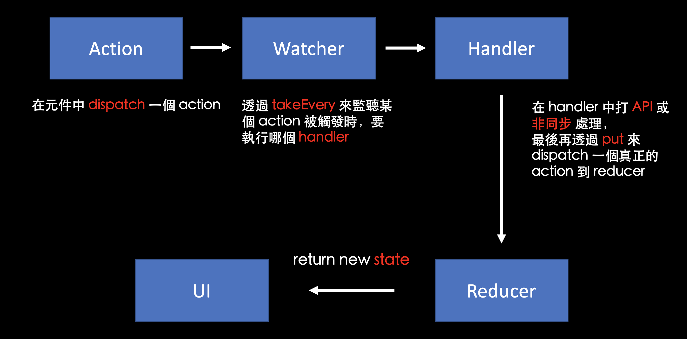

難得寫了一篇長文。
簡述
附註：saga 會需要一些 generator 的概念（不用很深，基礎就夠了），所以建議先把 快速入門 generator 看懂後再來看，不然會學的很有障礙。
這是第一次學 saga，相較於 thunk 來說確實是複雜了一些，不過只要照著教學一步一步自己練習，還是能慢慢理解他背後的邏輯的。
總之這篇文章的目的是希望能讓每個人都學會「怎麼用 saga」，也希望自己能把 saga 的概念弄得更清楚一些。
為了讓學習效果更佳，所以這篇會從零開始，也就是用 create-react-app 來開一個空的專案，先建立 redux 後再來來一步一步加上 saga，這樣才不會有一種「好像漏掉了什麼」的感覺存在。
順道一提，雖然等一下的範例會用到 redux，但是不會用到 react-redux、actionCreator、actionType 這些東西。我希望讓這個範例越簡潔越好，一方面省掉不必要的程式碼，另一方面也能更專心把重點放在 saga 上。
最後祝各位學習愉快，開始吧！
建立基本的 redux 環境
前置作業
首先，在 create-react-app 完以後，我希望資料夾結構長這樣就好：
1 | ├── public |
所以進到專案資料夾後先幫我執行這段，刪掉不必要的東西：
1 | cd src |
接著把 index.js 改成這樣：
1 | import React from 'react'; |
最後 npm run start，應該就會顯示 Hello 的畫面，這樣就 OK 了。
沒問題以後，記得順便把該裝的東西裝起來：
1 | npm install redux redux-saga |
正式作業
為了怕等一下混亂所以先說明，這個段落的檔案結構會長這樣：
1 | ├── public |
接著要來正式加上 redux 環境，我們要做的就是一個經典的「Counter」。
雖然說是從零開始，不過 redux 的部分我不會講太多，只會大概講一下步驟跟附上程式碼。如果你完全不懂 redux 的話，建議你先參考 初探 Redux 再回來學 saga。
首先
1. 建立 Counter 元件
1 | // Counter.js |
接著在 index.js 中引入：
1 | import React from 'react'; |
這個時候應該就有一個顯示 counter 值和按鈕的畫面了。
2. 加入 redux（建立 store 和 reducer）
src/store/reducer.js：
1 | export default function counterReducer (state = 0, action) { |
src/store/index.js：
1 | import { createStore } from "redux" |
接著回到 src/index.js 把 store 拿進來用：
1 | import React from 'react'; |
稍微解釋一下這段，因為我們沒有用 react-redux，所以改用 subscribe 的方式來做到「當 store 改變時重新 render」這件事情。
附註：如果你對 subscribe 的概念不太懂的話可以參考 用實作的方式來重新學習 Redux
另外 <Counter /> 的部分會傳給他三個 props：
values，把 store 中的 state 傳進去onIncrement用來 dispatch +1 的 actiononDecrement用來 dispatch -1 的 action
最後把 <Counter /> 內部修改成這樣就完事了：
1 | import React from "react"; |
好，做到這邊 redux 的部分就完成了。
現在你的畫面應該要顯示 Counter 值，跟點下按鈕時會把值 +1 和 -1，跟 store 維持同步的狀態。如果有任何疑問的話可以到這邊來看原始碼。
沒問題的話可以喝口水，下半場要開始了。
在加上 saga 之前，先認識一下 saga
如題，我想利用這段介紹一下 saga 是什麼？還有它跟其他的 middleware 有什麼差別？
saga 是 redux 的一個 middleware，如果你有學過 thunk 的話應該就對 middleware 這東西不陌生。
簡單來說，在 redux 的世界裡面如果我們想要改變 state，就必須透過 dispatch 來發出一個 action 這種方式來修改。
可是有一個問題來了，就是如果我的 action 是非同步操作，像是打 API 之類的話，我要怎麼用 dispatch 的方式來做？
你可能會想說我可以寫在 reducer 裡面啊，像這樣：
1 | export default function myReducer (state = [], action) { |
可是不要忘了 reducer 的原則是「pure function」，你不可能把這種「side effect」的事情放到裡面來做。
所以呢，middleware 最主要就是用來解決這個問題的，目前比較知名的幾個 middleware 有 redux-thunk、redux-saga 和 redux-observable，但 redux-observable 我完全沒碰過所以就不多提了。
那 thunk 跟 saga 有什麼差別？我們直接用 code 來解釋吧。
如果要透過 thunk 來作非同步操作的話，你會這樣做：
1 | // 最後會回傳一個 function |
而 saga 的話會這樣做：
1 | function render() { |
注意到了嗎？在 thunk 裡我們 dispatch 的 action 是一個「function」，而 saga 裡面 action 幾乎就跟原本的一模一樣嘛，是我們最熟悉的「object」。
thunk 的好處是比較好學，但是測試不好做（因為邏輯都寫在 function 裡），saga 則是反過來，測試好做很多，但是學習曲線相對增高）
總之，希望這一段能讓你對 saga 有一些認識，還有他跟 thunk 的差別所在。
正式加入 saga
懶人包流程
在正式開始之前，先稍微看一下 saga 的運作流程：

附註：先不用管 takeEvery 和 put 那些不知道是啥的東西，之後會再解釋。
- 在元件中 dispatch 一個 action
- watch saga 會接收到這個 action
- watch saga 會把這個 action 交給某個 handler 來處理
- handler 裡面會做一些事情，最後再 dispatch 另一個 action 到 reducer 來產生新的 state。
我知道現在看完應該還是霧煞煞，但你就先看個概念就好，可以等之後再回來看一遍就會理解了。
正式開始
延續剛剛的範例，我們現在要新增一個「一秒後才 +1 的按鈕」。
首先先新增一個 src/store/saga.js，跟 saga 相關的東西都會寫在這裡面，內容是這樣：
1 | import { fork, put, take, delay } from "redux-saga/effects" |
fork、put 這些從 redux-saga/effects 拿出來的東西統稱為「Effects API」，基本上只會拿來跟 generator 搭配使用，先知道這些就好。
而 yield 後面只要接這些 Effects API 的話，就會等到「這個行為結束後」才會往下執行，以 handlerIncrementAsync 來看的話就是：
1 | function* handlerIncrementAsync () { |
put 可以直接想成是 dispatch 的意思，所以整段合起來就是「一秒後幫我 dispatch {type: 'INCREMENT'} 這個 action 出去」。
那會送到哪裡？其實就是送到 reducer 去。
接下來是我覺得在 saga 中很重要的觀念「watcher」，watcher 的用途就是用來幫你監聽：
- 當元件 dispatch 什麼 action 時，我要交給哪個 handler 來處理
- 當元件 dispatch 什麼 action 時，我要交給哪個 handler 來處理
- 當元件 dispatch 什麼 action 時，我要交給哪個 handler 來處理
所以如果一個 action 是要交給 saga 來處理的話，那 action type 一定是對應到 saga 的 wacher，跟 reducer 一點關係也沒有。（詳細可以參考最下面的 地雷 段落）
因此 rootSaga 的意思是這樣：
1 | export default function* rootSaga() { |
至於為什麼要用 while(true) 來跑？這個跟 generator 的特性有關。簡單來說就是我希望這個監聽是「持續性」的，如果沒有 while(true)，那執行完一次後就不會再繼續跑下去了（你可以之後自己拿掉看看就懂我的意思了）。
好，以上如果你有聽懂的話，saga 的核心觀念差不多就是這樣而已，剩下的只是把放到 store 而已。
最後來改一下 src/store/index.js 的內容：
1 | // 把 applyMiddleware 拿出來，因為我們要用 middleware |
附註：記得要先把 middleware 放進去初始化以後才可以跑起來，所以 sagaMiddleWare.run() 才會寫在最後面。
現在 saga 設定好了，store 也設定好了，還差什麼？只差把元件加上對應的 event handler 而已！馬上來加吧：
1 | // src/index.js |
1 | // src/Counter.js |
做到這邊後，就達成我們一開始要做的效果了，可以到這邊的範例來看。
最後恭喜你走到這邊，以上就是 saga 的基礎，如果都有理解的話我覺得對於 saga 就有一定的理解了。接下來要講的東西都算是額外補充或是延伸，但核心理念都還是跟剛剛學的是一樣的。
最後我也做了一個簡單的 saga 串 API 的練習，有興趣的話可以到去看看。
如果有多個 watcher 的話怎麼辦？
這時候可以改用 all 這個 Effects API 來處理：
1 | import { put, delay, takeEvery, all } from "redux-saga/effects" |
跟 Promise.all() 有異曲同工之妙，不過比起這種寫法，你應該更常看到下面的寫法：
1 | import { put, delay, takeEvery, all } from "redux-saga/effects" |
仔細看就會發現是一樣的東西，只是用 function 來包裝而已。
takeEvey 跟 takeLatest 差在哪？
沿用剛剛例子，如果我是用 takeEvery 來做監聽：
1 | function* watchIncrementAsync () { |
接著我一次點十下 +1 Async 的按鈕（按很快的那種），那就會在一秒後從 1, 2, 3, ...10，也就是說每一次的 dispatch 都會被處理。
但 takeLatest 就不一樣了，如果改成這樣：
1 | function* watchIncrementAsync () { |
接著一樣一次點 10 下按鈕，最後 counter 的值會是 1，為什麼？因為只有最後一次的 dispatch 才會被處理，這個就是他們的差別。
所以 takeEvery 跟 takeLatest 還真是命名的有夠貼切 XD
一些學習時踩到的地雷
第一個
如果你跟我一樣是看 Redux Saga Beginner Tutorial 來學 saga 的話，也許就會碰到這個問題。
delay 這個東西在 redux-saga 的 v1 和 v1 以前有不同的引入方式，這個害我卡很久。
v1 前：
1 | import { delay } from 'redux-saga' |
v1 後：
1 | import { delay } from 'redux-saga/effects' |
另外，透過 redux-saga/effects 引入的 delay 不能透過 call(delay, 1000) 的方式來用，因為兩個的值不一樣。
一個是 function，一個是 effect creator，而call 的第一個參數只接受 function，所以才不可以這樣用。
詳細可以參考這篇討論。
第二個
不要把 saga 監聽的 action 跟 reducer 中的 action 搞混，假設我的 reducer 長這樣：
1 | export default function counterReducer(state = 0, action) { |
接著我想用 saga 做一個延遲一秒後再加一的動作，那我一定是這樣寫：
1 | export default function* rootSaga() { |
而不是這樣寫：
1 | export default function* rootSaga() { |
要知道用 saga 的邏輯是：
- 在元件中 dispatch 一個 action 給 saga watcher（不是 reducder）
- 觸發 saga watcher 後會丟給對應的 handler 處理
- handler 處理完以後，再幫我 dispatch 另一個 action 到 reducer 去。
所以這兩個 action 是完全不相干的東西，要交給 saga 處理的 action 絕對是對應到 watcher，不是 reducer，這個一定要弄清楚。
如果你真的不幸寫成一樣的名稱的話，那就會陷入無限迴圈（自己的實際經驗）。